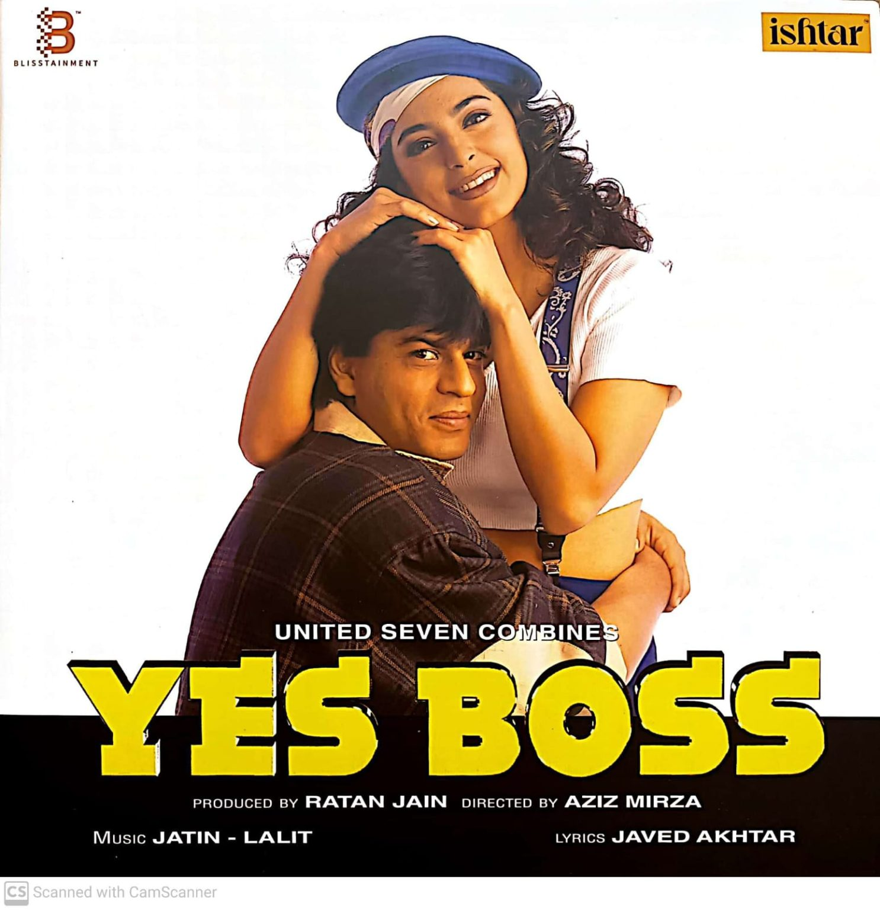
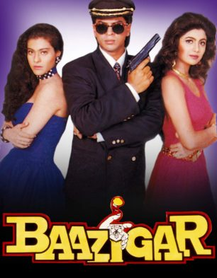

Dil Toh Pagal Hai
Rahul and Nisha are members of a massive dance troupe that performs dance-based musical plays. Nisha is secretly in love with Rahul, but outwardly, they are just the best of friends. Rahul announces his desire to direct a new musical named Maya. The members of the troupe, including Nisha, have their doubts about the title character, "Maya," who Rahul describes as a girl who believes in true love, waiting for her prince charming, who will surely turn up and take her away. Nisha is selected to play the role of this girl, Maya.

Yess Boss
Ambitious, Rahul Joshi wants to be rich, and is lucky enough to find a job with extra earnings from his boss, Siddharth, a lustful person having extramarital affairs, who has deviously trapped the rich Sheela. Rahul earns overtime money in keeping the affairs a secret. Later, Siddharth is lustfully attracted to the elegant and gorgeous Seema Kapoor, an aspiring model also desiring a life of luxury. Siddharth asks Rahul to help him trap Seema too. Helpless, Rahul does so, but also has a soft spot for her. Anyway due to his efforts, Seema is impressed by Siddharth's personality.

Baazigar
Ajay Sharma is a young boy who grows up to seek revenge for his father's death caused by Madan Chopra, a rich businessman. Chopra has two daughters: Seema and Priya. Ajay begins a secret relationship with Seema. Chopra takes part in his last car race in Madras, only to learn that another participant, Vicky Malhotra, who Ajay assumes the role as, let him win on purpose to meet him.